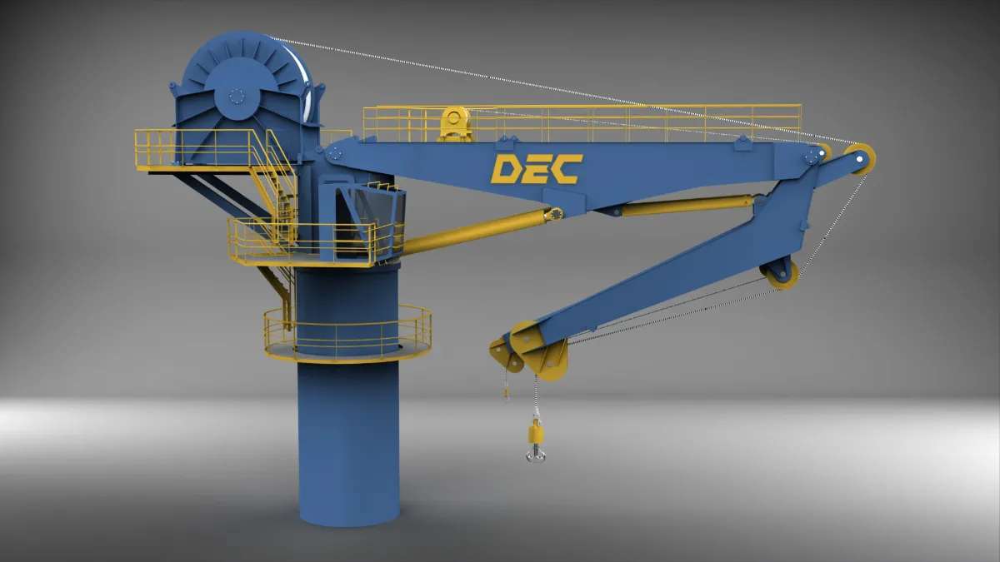

DEC CRANE AHC KNUCKLE BOOM CRANES
DEC Crane AHC Knuckle Boom Cranes are designed for demanding offshore operations, offering high capacity, high lifting height, and advanced operational capabilities. These cranes provide Active Heave Compensation (AHC) technology, ensuring stable and safe lifting regardless of sea conditions. With a powerful main winch, auxiliary winches, and an ergonomically designed operator cabin, they offer maximum efficiency and comfort for offshore operations.
APPLICATIONS
DEC Crane AHC Knuckle Cranes are ideal for offshore oil rigs, deep-water exploration, subsea operations, cargo handling, and ship-to-ship transfer. Their design ensures unmatched performance, safety, and precision in the harshest offshore and marine environments.
DEC Crane AHC Knuckle Cranes are engineered to meet the toughest challenges in lifting, handling, and positioning equipment, making them the perfect choice for offshore, marine, and subsea operations.
Standard Features:
✅ Lifting Capacity: • 15t to 70t single line
• 140t double fall capacity
✅ Excellent Operational Capabilities: • High lifting height
• Ability to bring knuckle-boom close to deck
✅ Active Heave Compensation (AHC): • AHC on the main winch for stable load handling
✅ Main Winch Mounted on the Crane:
• Positioned directly on the crane
✅ Main Winch Wire Capacity:
• Up to 4500m
✅ Auxiliary Winches:
• With up to 40t SWL capacity and 3000m wire capacity
✅ Fully Equipped, Air-Conditioned, Ergonomic Operator Cabin:
• Comfort and efficiency for extended operations
✅ Constant Tension
• Ensures smooth operation and precise lifting
✅ Manual Overload Protection System (MOPS)
✅ Automatic Overload Protection System (AOPS)
• Enhanced safety during lifting operations

Optional Features:
🔹 Tugger Winches – Additional winches for towing and pulling tasks
🔹 Auxiliary Winches – With or without AHC winch capabilities
🔹 Fiber Rope Solutions – Ideal for operations at extreme depths
🔹 Remote Control – For flexible and efficient operation
🔹 Pedestal Adapter – For custom mounting and installation requirements
🔹 Flood Lights/Helicopter Lights – For enhanced visibility during night operations
🔹 Boom Tip Camera – To improve visibility and safety
🔹 Winterization Package – For cold climate operations
🔹 Certified for Personnel Lift – Safe for lifting personnel as per regulations
🔹 Splash Zone Mode – For operations in splash zones
🔹 For Operation in Hazardous Zones – Explosion-proof and safety-compliant design
KEY ADVANTAGES
✅ Rugged Performance:
DEC AHC Knuckle Cranes are designed for offshore conditions with low power consumption and high performance. The combination of low weight and low center of gravity ensures maximum cargo capacity on deck.
✅ Flexibility & Precision:
The knuckle boom design allows the crane to operate with extreme flexibility and precision, even in confined spaces or at high elevations. With the ability to bring the boom close to the deck, the crane provides excellent load handling in tight spaces and high-altitude tasks.
✅ Enhanced Stability & Safety:
The integration of Active Heave Compensation and the MRU (Motion Reference Unit) ensures the crane remains stable during operations, even in rough seas or when handling heavy or unstable loads. The AHC system compensates for wave-induced motion, resulting in safe and smooth lifting operations.
✅ Superior Operator Comfort:
The ergonomically designed cabin, equipped with air-conditioning, provides the operator with a comfortable environment during long shifts. With excellent visibility and ease of control, this design optimizes performance and reduces operator fatigue.